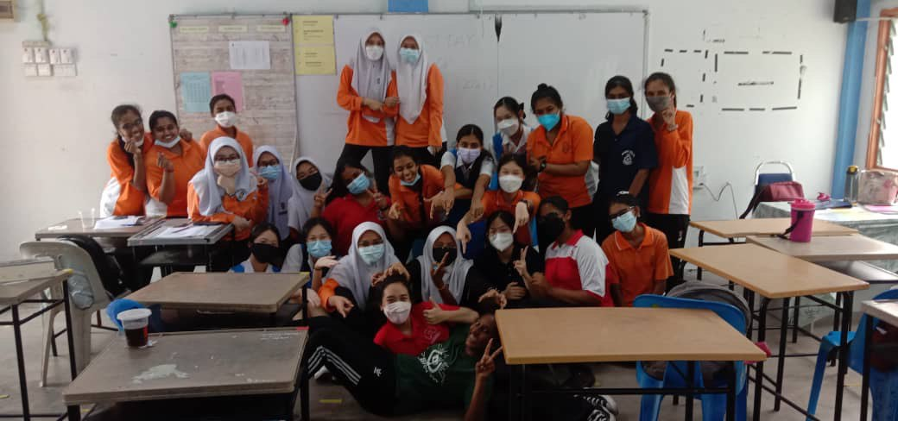
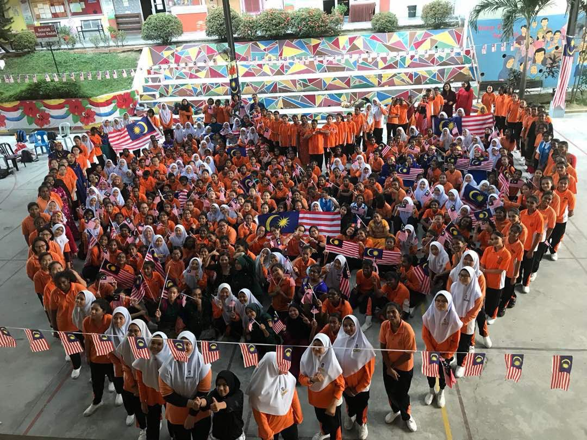
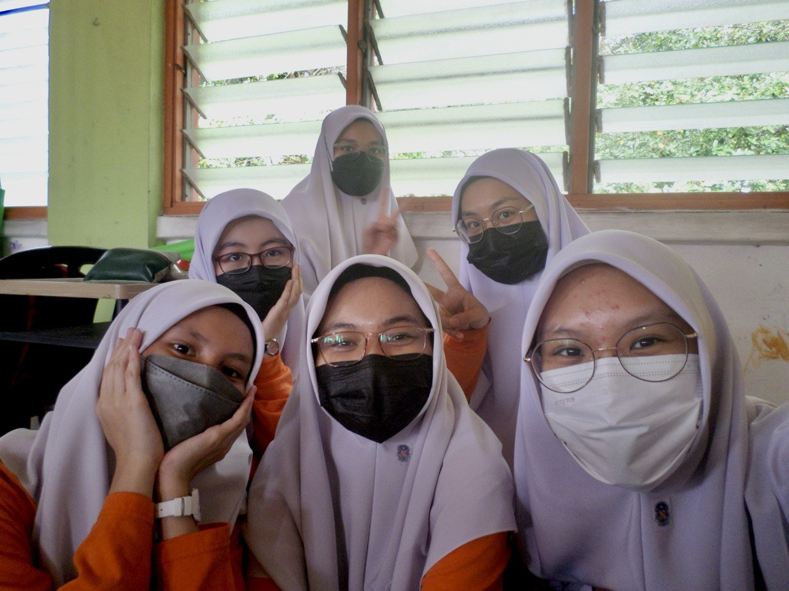
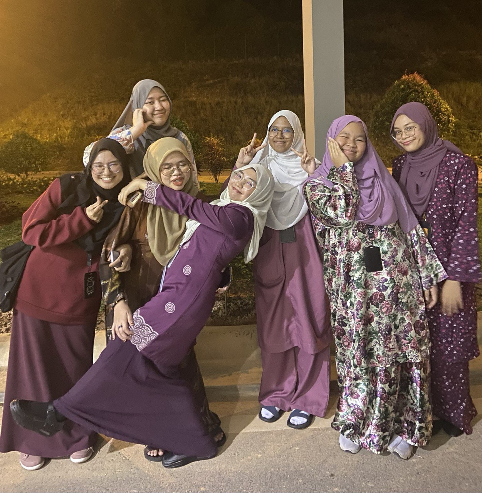
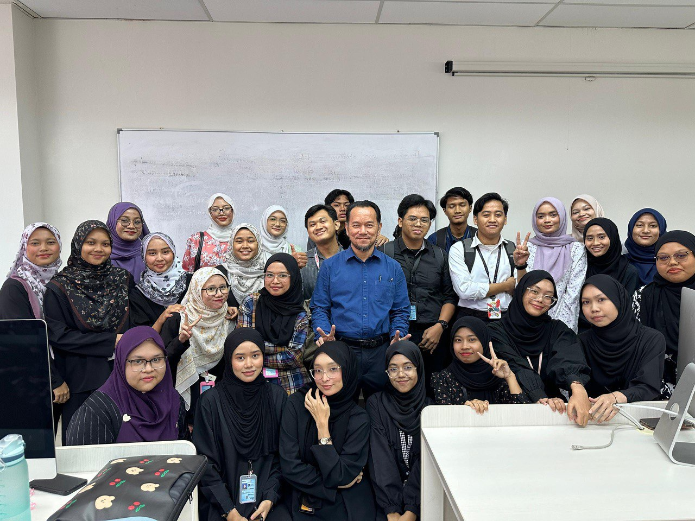
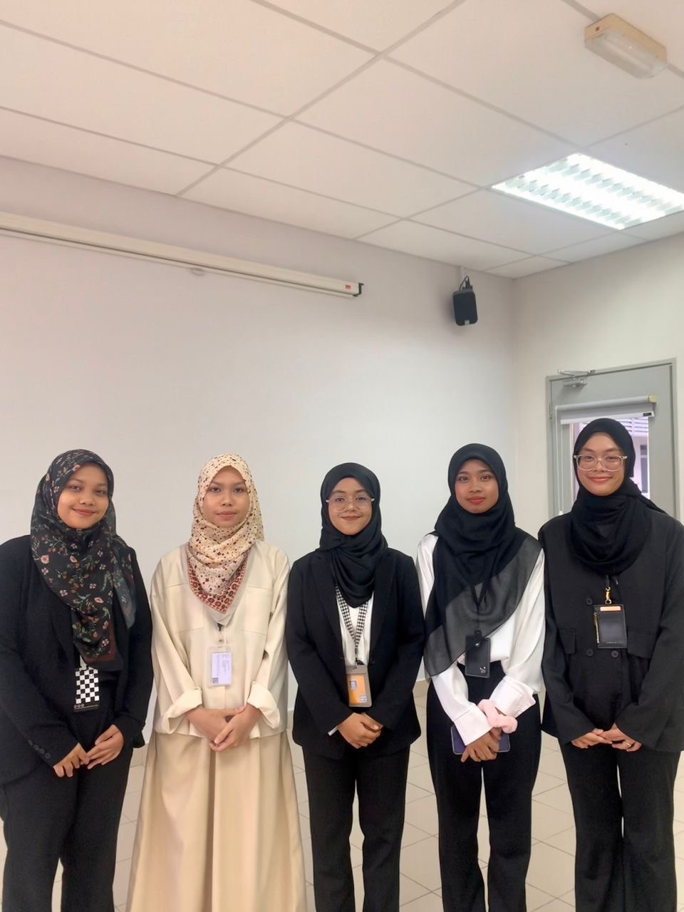

SK Telok Pulai was opened on 4 June 1987 with the original name of Sekolah Kebangsaan Sungai Bertek. This school is located 5km from Klang City. I have attended school there for 6 years and managed to finish school with distinction. I was a librarian back at my elementary school. I pour all my youth and dedication while I'm schooling there.
The school is located at Jalan Tengku Kelana adjacent to the Church of Our Lady Of Lourdes. It was established in 1924 and main school building was built around the year 1926 to 1928. I first joined the school at 2017 at placed in V class. It was a all-girls school, so it was easy for me to find new friends. I have joined a lots of school activities and is active in cocuriculum. I made lots of memories and I personally think my highschool era is the best one yet!
  UiTM Negeri Sembilan Branch is one of the branches of MARA University of Technology established in Negeri Sembilan, Malaysia. Rembau Campus is the newest UiTM campus in Negeri Sembilan and it was established in 2017. Currently, I'm continuing my diploma in Information Management at Uitm Rembau and already in my final semester. However, after finish with my diploma, I'm planning to further study degree in record management.
  